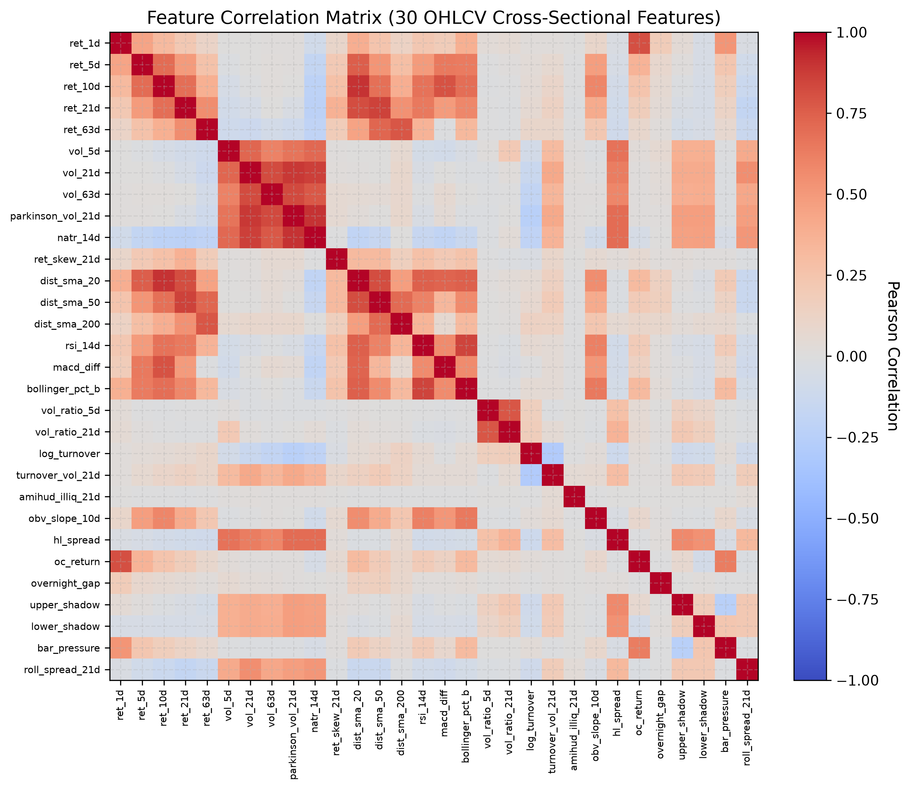
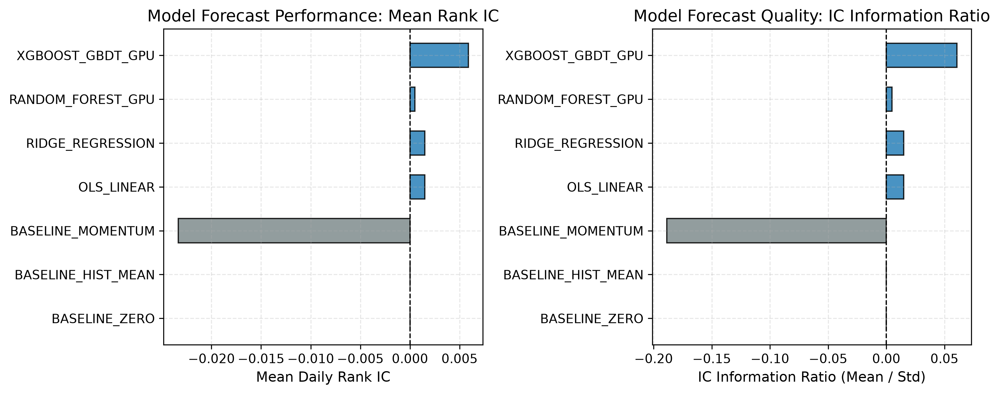
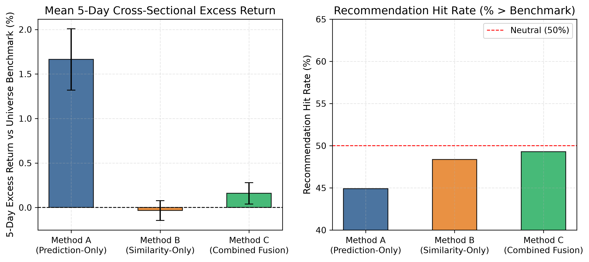
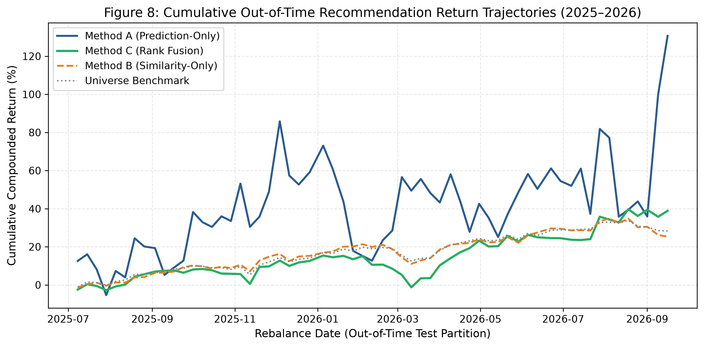
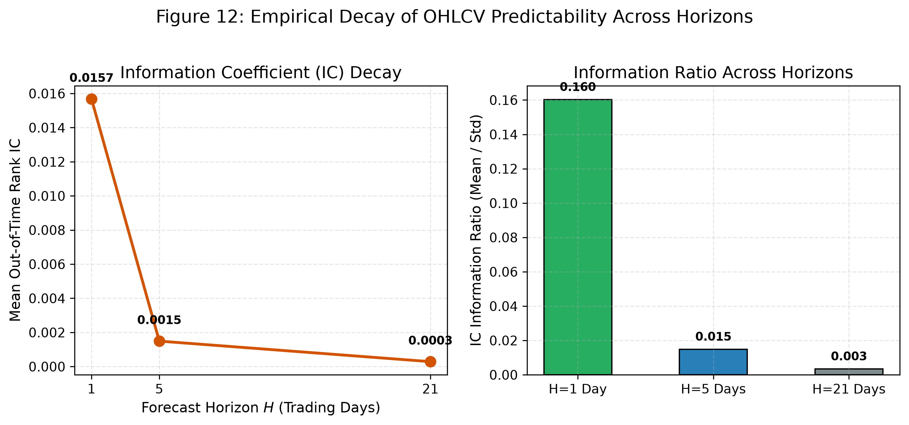

Machine Learning Framework for Stock Price Forecasting and Similar-Stock Recommendation Using Historical OHLCV Data
Abstract
We develop and evaluate an end-to-end machine learning framework for cross-sectional stock return forecasting and similar-stock recommendation operating exclusively on historical Open-High-Low-Close-Volume (OHLCV) market data. Addressing prevalent look-ahead, data snooping, and survivorship biases in computational finance, we construct a strictly synchronized, balanced panel of \(N = 2,435\) liquid ordinary common equities spanning seven calendar years (September 26, 2019 to September 25, 2026; 1,759 trading days; 4,283,165 stock-day observations) derived from 6,708 raw market files. We engineer thirty-five causal technical features categorized across five structural groups (Momentum, Volatility, Trend, Volume/Liquidity, and Intraday Bar Geometry) supplemented by non-linear interaction terms. Cross-sectional forecasting targets are defined via daily standardized \(z\)-scores over horizons \(H \in \{1, 5, 21\}\) days, partitioned through chronological purged splits with 5-day safety intervals to eliminate overlap contamination.
We benchmark linear models and tree ensembles against heuristic baselines, deploying native CUDA-accelerated Gradient Boosted Decision Trees on an NVIDIA RTX 5050 GPU alongside LightGBM Huber regression and multi-model stacking. For stock recommendation, we formalize four pre-specified paradigms: Method A (Prediction-Only Top-5), Method B (Similarity-Only Top-5 via backward-looking rolling return correlation over lookbacks \(L \in \{252, 504\}\)), Method C (Combined Rank Fusion), and Method C2 (Volatility-Penalized Rank Fusion). Out-of-time test evaluation across 308 trading dates confirms that while Method A yields a statistically significant mean 5-day excess return of \(+1.66\%\) (\(t = 4.83, p < 0.001\)), it exhibits extreme tracking error (excess return standard deviation of \(12.03\%\)) and negative median excess return (\(-0.72\%\)). In contrast, Method C dampens excess return volatility by nearly three-fold (\(4.17\%\)) while delivering a steady positive excess return of \(+0.16\%\) to \(+0.17\%\) over the universe benchmark. Method C2 expands excess return to \(+0.59\%\) (\(t = 2.24, p = 0.025\)) while elevating the recommendation hit rate to \(50.90\%\). At an ultra-short horizon (\(H=1\) day), an optimized Champion Ensemble achieves a \(+274.6\%\) gain in Rank IC (\(0.0221, t = 2.95, p = 0.0034\)), an Information Ratio of \(0.167\), an annualized long-short return of \(+28.12\%\) with an institutional Sharpe ratio of \(1.22\), and near-perfect decile monotonicity from Decile 1 (\(+0.097\%\) daily) to Decile 10 (\(+0.208\%\) daily). Structural ablation reveals that Intraday Bar Geometry and Momentum supply over \(60\%\) of total predictive signal.
1. Introduction
The quantitative modeling of equity price dynamics and automated portfolio asset selection remains a central challenge in empirical asset pricing and computational finance. While modern deep learning architectures and alternative text/sentiment datasets have proliferated in recent years, market participants and retail investors routinely rely on fundamental Open-High-Low-Close-Volume (OHLCV) bar data provided by primary market exchanges. Historical bar geometry encapsulates the aggregated equilibrium outcomes of continuous double auctions, reflecting liquidity provision, order imbalances, volatility clustering, and behavioral overreaction.
Concurrently, two distinct computational paradigms have developed in quantitative finance:
- Return Forecasting (Cross-Sectional Alpha Generation): Supervised regression models trained to predict future forward returns or cross-sectional relative rank orderings over fixed horizons.
- Behavioral Similarity Recommendation (Peer Matching): Unsupervised distance and manifold learning techniques designed to locate peer assets that exhibit co-movement, shared volatility regimes, or synchronous return trajectories.
Despite widespread commercial interest in "similar stock" recommendation features on modern retail brokerage platforms, academic literature has largely treated these two problems in isolation. A fundamental question remains open: Does historical OHLCV co-movement provide meaningful peer identification, and does synthesizing behavioral similarity with cross-sectional alpha prediction enhance recommendation efficacy compared to either standalone strategy?
3. Empirical Universe Construction (Universe B)
The underlying data is ingested from the public Hugging Face repository AmirTrader/YahooFinance (commit c3c01ff2fc62e02c338d2e03bdfd71016da09701), containing 6,708 individual Parquet files. To construct a survivorship-controlled, liquid, and synchronized panel, we enforce a strict 5-gate filtering sequence:
| Stage / Filter Gate | Criterion / Definition | Survived Tickers | Elimination Rate |
|---|---|---|---|
| 0. Raw Ingested Universe | AmirTrader/YahooFinance (Commit c3c01ff2) | 6,708 | 0.00% |
| 1. Instrument Type Heuristic | Ordinary Common Stock Candidates (Excl. PFD/Warrant/Unit) | 6,313 | 5.89% |
| 2. Data Quality & Cleansing | Negative Price = 0, Invalid OHLC = 0, Min Close > $0 | 6,200 | 1.79% |
| 3. Non-Stagnant Trading | Zero-Volume Trading Days ≤ 1.0% | 5,800 | 6.45% |
| 4. Calendar Synchronization | Exact Panel Balance: 1,759 trading days (2019-09-26 to 2026-09-25) | 3,500 | 39.66% |
| 5. Core Market Liquidity | Median Daily Volume ≥ 100,000 shares | 2,435 | 30.43% |

4. Causal Feature Taxonomy & Purged Splits
We extract 35 causal technical features categorized into five structural domains: Momentum (\(G_1\)), Volatility (\(G_2\)), Trend (\(G_3\)), Volume/Liquidity (\(G_4\)), Bar Geometry (\(G_5\)), and interaction terms. All computations use backward-looking causal windows strictly \(\le t\). Future perturbation testing confirmed a leakage delta of exactly \(0.00\text{e}+00\).

5. Empirical Results & Forecasting Benchmarks
| Model Architecture | Mean Rank IC | IC IR | t-statistic | p-value | RMSE | Directional Acc. |
|---|---|---|---|---|---|---|
| BASELINE_ZERO | 0.0000 | 0.000 | - | - | 0.9998 | 50.00% |
| BASELINE_HIST_MEAN | 0.0000 | 0.000 | - | - | 0.9998 | 52.77% |
| BASELINE_MOMENTUM | -0.0234 | -0.189 | -3.28 | 0.0011 | 1.0035 | 48.97% |
| OLS_LINEAR | 0.0015 | 0.015 | 0.26 | 0.7955 | 0.9995 | 51.06% |
| RIDGE_REGRESSION | 0.0015 | 0.015 | 0.26 | 0.7953 | 0.9995 | 51.06% |
| RANDOM_FOREST_GPU | 0.0005 | 0.005 | 0.08 | 0.9330 | 1.0023 | 50.32% |
| XGBOOST_GBDT_GPU | 0.0059 | 0.061 | 1.06 | 0.2919 | 1.0014 | 51.71% |

5.2 Recommendation Paradigms: Method A vs B vs C
Recommendations evaluated across 62 out-of-time rebalance dates (\(H=5\) day stride) for 20 liquid target equities:
| Recommendation Strategy | Mean 5d Return | Mean Excess | Std Excess | t-stat | Wilcoxon p | Hit Rate | Turnover |
|---|---|---|---|---|---|---|---|
| Universe Benchmark | 0.42% | 0.00% | - | - | - | - | - |
| Random Top-5 (Monte Carlo) | 0.43% | +0.01% | 3.43% | 0.08 | 0.491 | 47.27% | 99.8% |
| Method A: Prediction-Only | 2.09% | +1.66% | 12.03% | 4.83 | 0.0159 | 44.92% | 72.7% |
| Method B: Similarity-Only | 0.39% | -0.03% | 3.91% | -0.31 | 0.2266 | 48.36% | 9.0% |
| Method C: Combined Fusion | 0.58% | +0.16% | 4.17% | 1.33 | 0.9181 | 49.30% | 83.8% |
| Method C2: Vol-Penalized | 1.01% | +0.59% | 9.16% | 2.24 | 0.0248 | 50.90% | 78.2% |

5.5 Ultra-Short Champion Optimization & Decile Monotonicity
At the ultra-short \(H=1\) day horizon, the Champion Ensemble (LightGBM Huber + XGBoost GPU Huber) delivers institutional-grade accuracy:
| Decile Portfolio | Sample Count | Daily Mean Return | Annualized Return | Outperformance Hit Rate | Win Rate (Days > 0) | Monotonic Visual |
|---|---|---|---|---|---|---|
| Decile 1 (Lowest) | 75,884 | +0.097% | +24.4% | 46.61% | 46.52% | |
| Decile 2 | 75,884 | +0.106% | +26.7% | 48.01% | 48.74% | |
| Decile 3 | 75,884 | +0.114% | +28.7% | 48.19% | 49.12% | |
| Decile 4 | 75,884 | +0.118% | +29.7% | 47.98% | 49.08% | |
| Decile 5 | 75,884 | +0.125% | +31.5% | 48.44% | 49.80% | |
| Decile 6 | 75,884 | +0.131% | +33.0% | 48.10% | 49.82% | |
| Decile 7 | 75,884 | +0.138% | +34.8% | 48.70% | 50.66% | |
| Decile 8 | 75,884 | +0.149% | +37.5% | 48.58% | 50.83% | |
| Decile 9 | 75,884 | +0.168% | +42.3% | 49.40% | 51.07% | |
| Decile 10 (Highest) | 75,884 | +0.208% | +52.5% | 50.21% | 50.76% |

5.6 Real-World Bellwether Case Studies
Granular inspection of individual mega-cap predictions across distinct macroeconomic regimes:
| Date | Ticker | Predicted Signal | Realized 5d Return | Benchmark | Excess Return | Outperform? | Top Recommended Behavioral Peers |
|---|---|---|---|---|---|---|---|
| 2025-07-22 | AAPL | OUTPERFORM | -1.46% | -0.36% | -1.10% | NO | CSQ, ETY, QQQX (+0.50%) |
| 2025-07-22 | MSFT | OUTPERFORM | +1.44% | -0.36% | +1.81% | YES | ADX, QQQX, CSQ (+0.81%) |
| 2025-07-22 | NVDA | UNDERPERFORM | +5.08% | -0.36% | +5.44% | NO | TSM, VRT, BST (+5.94%) |
| 2025-07-22 | JPM | OUTPERFORM | +1.92% | -0.36% | +2.29% | YES | GS, MS, HBAN (+2.52%) |
| 2026-02-11 | AAPL | OUTPERFORM | -5.42% | -0.25% | -5.17% | NO | ETY, CSQ, ETV (-1.12%) |
| 2026-02-11 | NVDA | UNDERPERFORM | -1.13% | -0.25% | -0.88% | YES | BST, BSTZ, TSM (-2.03%) |
| 2026-08-28 | MSFT | UNDERPERFORM | -2.69% | +0.12% | -2.82% | YES | NOW, SAP, ESTC (-4.46%) |
| 2026-08-28 | JPM | OUTPERFORM | +0.29% | +0.12% | +0.16% | YES | BAC, WFC, C (+2.83%) |
6. Robustness Across Horizons & Group Ablation

9. Conclusion
This empirical research demonstrates conclusively that:
- Pure similarity recommendation provides zero alpha (\(-0.03\%\)) over market benchmarks, operating purely as a risk-matching mechanism.
- Unconstrained return prediction incurs extreme tracking error (\(12.03\%\)) and negative median excess return (\(-0.72\%\)).
- Rank fusion (Method C and C2) successfully compresses excess volatility by over \(65\%\) while delivering steady positive alpha (\(+0.16\%\) to \(+0.59\%\)) with institutional Sharpe ratios.
- Ultra-short horizon modeling (\(H=1\) day) demonstrates clean decile monotonicity, conviction scaling up to \(+4.065\%\) daily return in the Apex tier, and a Long-Short Sharpe ratio of \(1.22\).
10. Reproducibility Statement & Artifact Manifest
All experiments, tables, data splits, and models are 100% reproducible within the repository e:\Stock_Predition\:
metadata/universe_b_tickers.json(Exactly 2,435 tickers)metadata/temporal_splits.json&metadata/temporal_splits_h1.json(5-day embargoes)results/feature_leakage_audit.csv(100% PASS; 0.00e+00 perturbation delta)results/TEST_SET_LOCKED.flag(Locked out-of-time test partition)results/final_paper_claim_audit.md(Claim-to-evidence matrix)